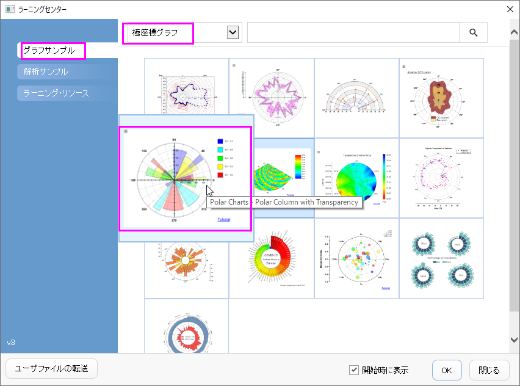
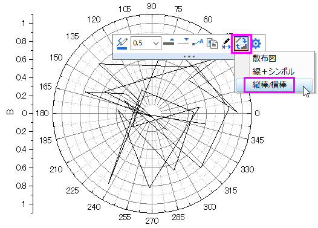
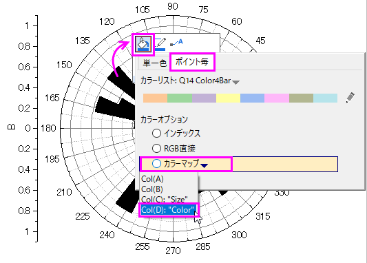
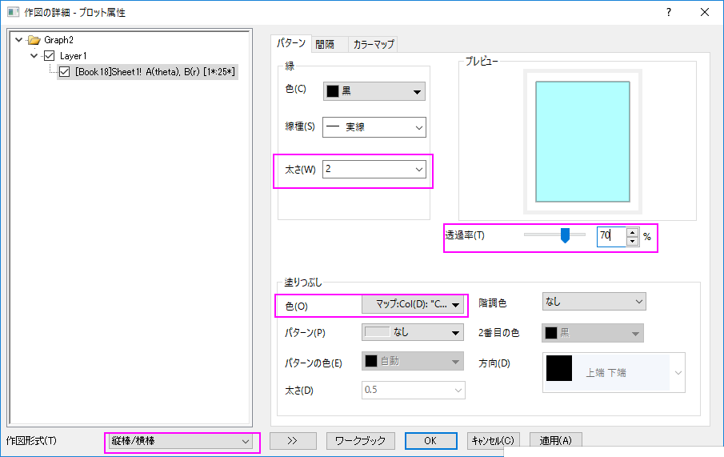
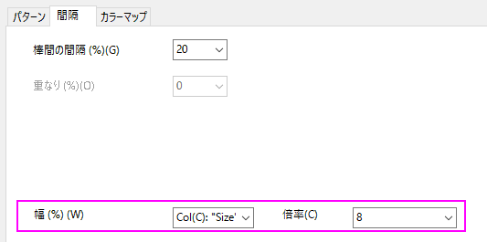
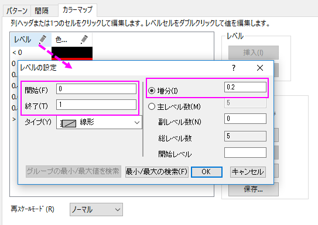
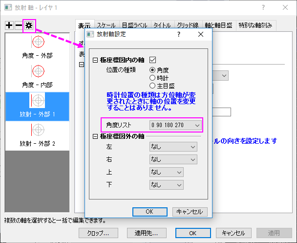
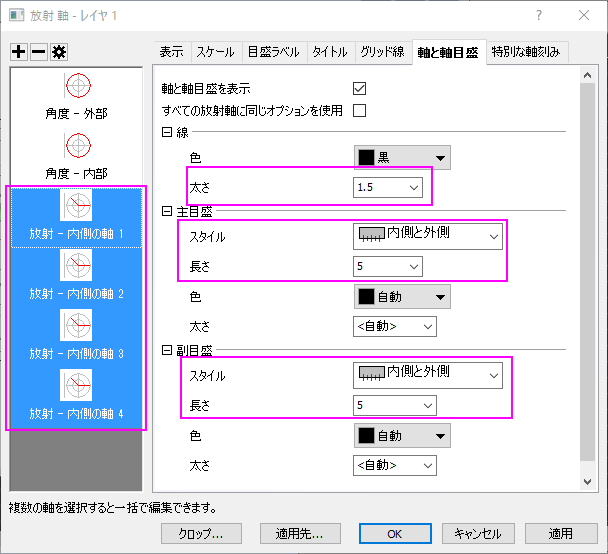
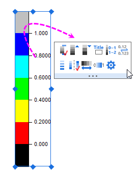
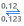

縦棒の極座標グラフ
polar-with-column
サマリー
極座標グラフを作図すると、Originのデフォルトでは折れ線グラフを作図します。しかし、この作図形式は縦棒/横棒に変更することができるので、縦棒の極座標グラフとして作図することができます。

学習する項目
このチュートリアルでは、以下の項目について解説します。
- 縦棒の極座標グラフの作図する
- データセットを使用して棒の幅を制御する
- 軸を編集する
ステップ
- ヘルプ: ラーニングセンター メニューを選択、または キーボードのF11 キーを押して、ラーニングセンターを開きます。グラフサンプルを選択し、カテゴリーのドロップダウンリストから極座標グラフを選択します。グラフサンプルをダブルクリックして、「Polar
Chart - Polar Contour from Matrix」を開きます。

このチュートリアルは、チュートリアルデータプロジェクト<Origin EXE フォルダ>\Samples\TutorialData.opjのColumn
and Stack Column フォルダと関連しています。
- ワークブックBook18をアクティブにします。列Bを選択して、作図：特殊グラフ：θr極座標グラフを選択して極座標グラフを作成します。凡例オブジェクトをクリックし、これを削除します。
- 折れ線グラフをクリックし、ミニツールバーを表示させます。プロットを変更ボタンをクリックし、縦棒/横棒を選択します。これで折れ線グラフを棒グラフに変更されます。

- グラフ内の棒をどれかクリックし、ミニツールバーを表示させます。塗り色ボタン
 をクリックし、カラーチューザーを開きます。カラーチューザーで、ポイント毎タブを選択し、カラーオプションをマップ：Col（D）に設定します。これにより、データシートのD列の値を参照したカラーマップにより、棒の色が設定されます。
をクリックし、カラーチューザーを開きます。カラーチューザーで、ポイント毎タブを選択し、カラーオプションをマップ：Col（D）に設定します。これにより、データシートのD列の値を参照したカラーマップにより、棒の色が設定されます。

- グラフの棒をダブルクリックして、作図の詳細ダイアログを開きます。
- パターンタブで、透過率を70%、境界の幅を2に設定します。
- 
- 棒の間隔タブで、幅（％）のドロップダウンメニューからCol(C):
"Size"を選択し、倍率では8を入力します。すると、列Cの値を参照してそれぞれの棒の幅が制御されます。
- 
- カラーマップタブで、レベルヘッダをクリックします。レベルの設定ダイアログで、レベルを0から1に、増分を0.2に設定します。
- 
OKをクリックして、作図の詳細ダイアログボックスを閉じます。
- ここから角度軸の編集を行います。
- 軸（角度または放射）をダブルクリックして、軸ダイアログボックスを開きます。角度のノードにあるスケールタブを開き、主目盛の値を45に、含目盛の数を2に設定します。
- 角度-外部ノードにある目盛ラベルのフォーマットタブを開きます。太字のチェックボックスにチェックを入れます。
- 角度のノードにあるグリッドタブを開き、主グリッド線のスタイルを破線に変更します。
- 角度-外部のノードにある軸と軸目盛タブを開きます。線の太さを1.5に変更します。
- 軸ダイアログで、このグラフの放射軸を変更することができます。
- ダイアログ右上の放射軸設定ボタン
 をクリックして、ダイアログをひらきます 。このダイアログで、ドロップダウンリストの角度リストから
0 90 180 270を選択します。
をクリックして、ダイアログをひらきます 。このダイアログで、ドロップダウンリストの角度リストから
0 90 180 270を選択します。
- 
- 放射ノードにあるスケールタブを開きます。スケールを0から1に変更します。
- 目盛ラベルタブのフォーマットタブを開きます。
- 放射 - 内部1を選択して、サイズを12変更し、太字ボックスにチェックを入れ、回転
(度)を0に設定します。
- 放射 - 内部2を選択して、サイズを12に変更し、太字ボックスにチェックを入れます。
- 放射 - 内部3と放射 - 内部4の両方を選択し、表示のチェックを外します。
- 放射 - 内部1ノードの目盛ラベルにある表示タブを開きます。表示ドロップダウンリストにあるカスタムを選択して、カスタムフォーマットのテキストボックスに.2*を入力します。
- タイトルタブを開き、放射軸ノードの全てを選択します。表示チェックボックスのチェックを外します。
- 放射ノードにあるグリッドタブを開きます。 副目盛にある表示のチェックボックスをのチェックを外します。OK
をクリックして設定を適用し、ダイアログボックスを閉じます。
- 軸と軸目盛のタブを開き、全ての放射軸を選択します。線の太さを1.5に変更します。スタイルを内側と外側に、主目盛と副目盛の両方の長さを5に設定します。
- 
- 放射 - 内側1にある特別な軸刻みのタブを開き、軸の開始の値を表示に、軸の終わりの値を非表示に設定します。放射-内部2を選択して、軸の開始と軸の終わりの両方の値を非表示に設定します。OKをクリックしてこの設定を適用して、ダイアログを閉じます。
- 挿入: 新規の色スケールを選択して、色スケールの凡例を追加します。色スケールの凡例を編集するには、色スケールをクリックし、ミニツールバーを開きます。

- 両端のレベルを表示するボタン
 をクリックし、両端のレベルを非表示にします。
をクリックし、両端のレベルを非表示にします。
- 小数点以下の桁数ボタンをクリックし、ドロップダウンリストから1を選択します。すると小数点以下の桁数が1桁に設定されます。
- 分割レイアウトボタンをクリックし、カラーブロックを分割して表示させます。
- アンチエイリアシングの有効化/無効化ボタン
 をクリックします。極座標グラフは以下のように編集されました。
をクリックします。極座標グラフは以下のように編集されました。